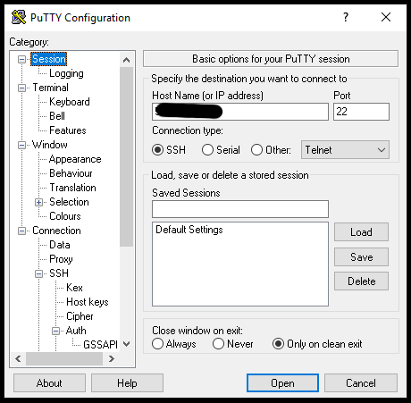
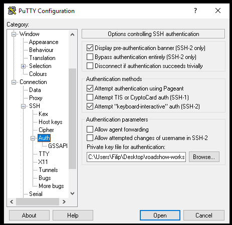
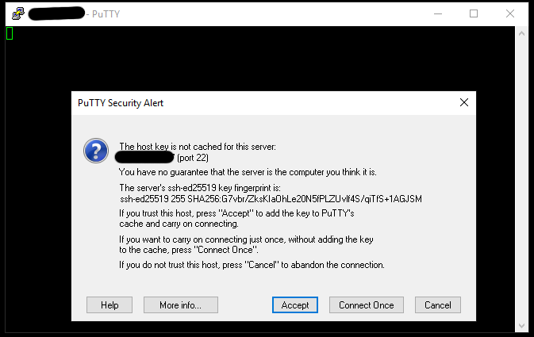
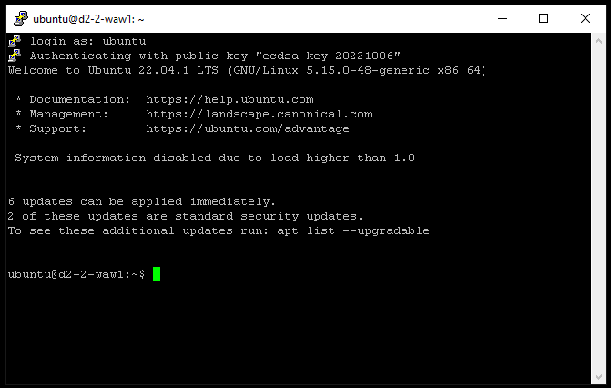
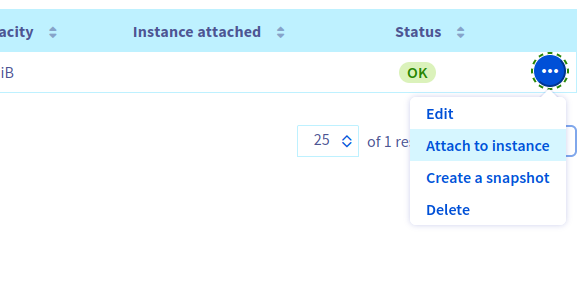

Podstawowe operacje na maszynie wirtualnej
W tej sekcji uruchomimy nową maszynę wirtualną, zalogujemy się na nią i przeprowadzimy podstawowe operacje.
1. Utworzenie instancji z dockerem
W Managerze w sekcji Compute w karcie Instances klikamy przycisk Utwórz instancję.
-
W sekcji "wybierz model" wybieramy Discovery D2-2 - instancja z publicznym IP, 1 CPU i 2GB RAM.
-
Lokalizacja: dowolna.
-
System operacyjny: Ubuntu 22.04
-
Wybieramy klucz SSH, który wcześniej dodaliśmy.
-
Konfiguracja instancji: w skrypcie poinstalacyjnym podajemy
#include https://get.docker.com/ -
Rozliczenie: godzinowe
2. Logowanie się do nowo utworzonej maszyny wirtualnej
Wykorzystamy klienta OpenSSH
ssh -i ~/roadshow-workspace/key ubuntu@${IP}
The authenticity of host can't be established. Are you sure you want to continue connecting odpowiadamy: yes
Wykorzystamy program putty.exe
W programie putty w sekcji session podajemy adres IP. 
W sekcji Connection -> SSH -> Auth podajemy ścieżkę do pliku z kluczem prywatnym priv.ppk.

Na pytanie czy na pewno jest to host do którego chcemy się połączyć odpowiadamy Accept. 
Podajemy nazwę użytkownika, któ©ego chcemy użyć do logowania. W naszym przypadku jest to ubuntu.

3. Sprawdzenie parametrów maszyny wirtualnej.
Żeby sprawdzić podstawowe parametry maszyny wirtualnej użyjemy kilku podstawowych komend.
Aby wyświetlić ilość pamięci RAM:
free
Aby wyświetlić liczbę rdzeni procesora:
nproc
Aby wyświetlić urządzenia blokowe:
lsblk
4. Dodanie dodatkowego dysku do instancji
Dodatkowy dysk do instancji dodajemy przez Managera.
W sekcji Storage wchodzimy w zakładkę Block storage i klikamy przycisk Create a volume
Ze względu na ograniczenia geograficzne wybieramy tą samą lokalizację jak ta, w której znajdują się maszyny wirtualne.
Po utworzeniu klikamy trzy kropki po prawej stronie i wybieramy Attach to instance 
Po podłączeniu jeszcze raz wykonujemy polecenie lsblk.
Przygotowanie dysku w systemie Linux
Tak dodany dysk jest surowy więc tworzymy na nim:
- tablicę partycji:
sudo parted -s /dev/sdX mklabel gpt
- partycję:
sudo parted -s /dev/sdX mkpart data 0% 100%
- system plików:
sudo mkfs.ext4 /dev/sdX1
- zamontowanie dysku
sudo mount /dev/sdX1 /mnt
Sprawdzenie wydajności dysku
Instalujemy oprogramowanie fio
sudo apt update
sudo apt -y install fio
Przechodzimy do katalogu /mnt
cd /mnt
sudo fio --name=test --bs=4k --ioengine=libaio --iodepth=4 --size=1g --direct=1 --runtime=30
Uruchomienie kontenera docker z nginx
Aby uruchomić kontener z serwerem nginx i opublikować go na porcie 80 wykonujemy komendę:
sudo docker run -d -p 80:80 --name nginx nginx:latest